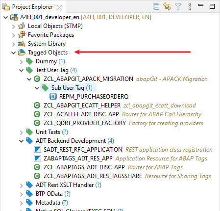
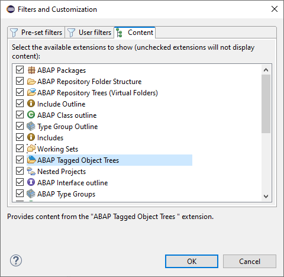
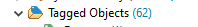

Dynamic Tree, similar to the
ABAP Repository Trees that is located in the
Project Explorer
For this feature you have to install at least Version v2.0
of the ADT Backend abap-tags-backend

Tagged Object Tree Node in Project Explorer
Tree Features
At root level this tree shows all the User-, Shared- and Global-Tags
that have Objects directly assigned or at a lower level of a given Tag
hierarchy. Each sub node that again has children has the
option to expand it, which in turn will load the assigned objects or
the underlying Tags. To refresh the content of a given node
you can either press the
F5
key or select the Refresh action from the node's context
menu.
On Repository Object nodes like Classes, Interfaces,
etc. you also have the option to execute common things like Running
ABAP Unit Tests, Executing the Object or just open the
Object in a different ABAP Project of the current Workspace.
To hide the Tagged Objects node from the Project Explorer
just deselect it via the filter dialog.

Filters of Project Explorer
Counter on Root Node
The
Tagged Objects node also displays a counter upon first loading
of its content. This counter represents all tagged objects of the user.
That means all tagged objects in global and user scope, and
also all those tagged objects that are available to the user via
Shared Tags.

Counter on Root Node